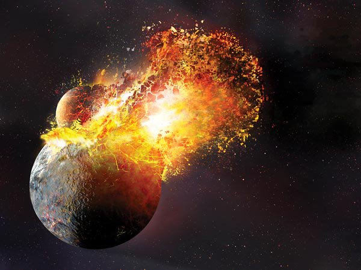

달의 탄생

달의 탄생 계기에 대해 그동안 분리설, 동시 탄생설 등 수많은 이론들이 존재했지만 최근에는 ‘거대 충돌설’이 가장 대세 있는 이론으로 떠오르고 있다.
45억 년 전 태양계 초기에 화상만한 천체가 지구와 대충돌을 일으켜 그때 우주로 탈출한 물질 등이 뭉쳐져 지금의 달이 되었다는 학설인데, 달의 성분 분석을 비롯해 여러 가지 정황들이 이에 부합되어 지금은 거의 정설로 굳어졌다.
달의 탄생 계기에 대해 그동안 분리설, 동시 탄생설 등 수많은 이론들이 존재했지만 최근에는 ‘거대 충돌설’이 가장 대세 있는 이론으로 떠오르고 있다.
45억 년 전 태양계 초기에 화상만한 천체가 지구와 대충돌을 일으켜 그때 우주로 탈출한 물질 등이 뭉쳐져 지금의 달이 되었다는 학설인데, 달의 성분 분석을 비롯해 여러 가지 정황들이 이에 부합되어 지금은 거의 정설로 굳어졌다.